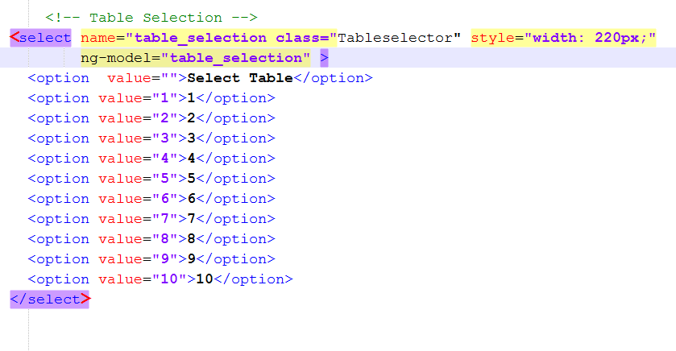

Step 4: Advanced Changes
On this page, we’re going to go over some of the advanced changes you can make before you deploy your app. These will require you to perform another Ionic Build operation before they take effect, as they are actual changes to the code of the application. These are built in to the application, so need to be manually set up before release.
First of these is changing the number of tables.
This is done by adding a new option to the dropdown list of table numbers.
Open up the customer application folder, and head in to the www folder, then the templates folder within that and open
the Checkout page in your text editor. Then you need to copy one of the previous values
and replace both instances of the number used with the one you’re adding. (Just remember to keep them in order!)
